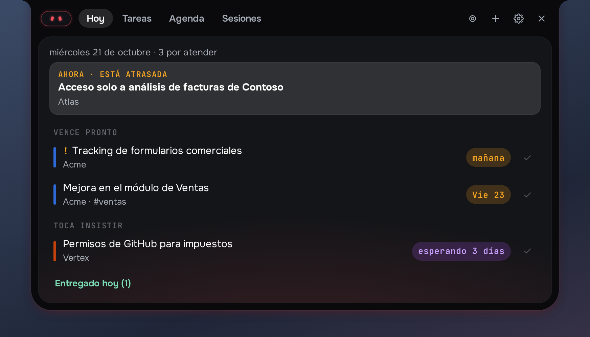
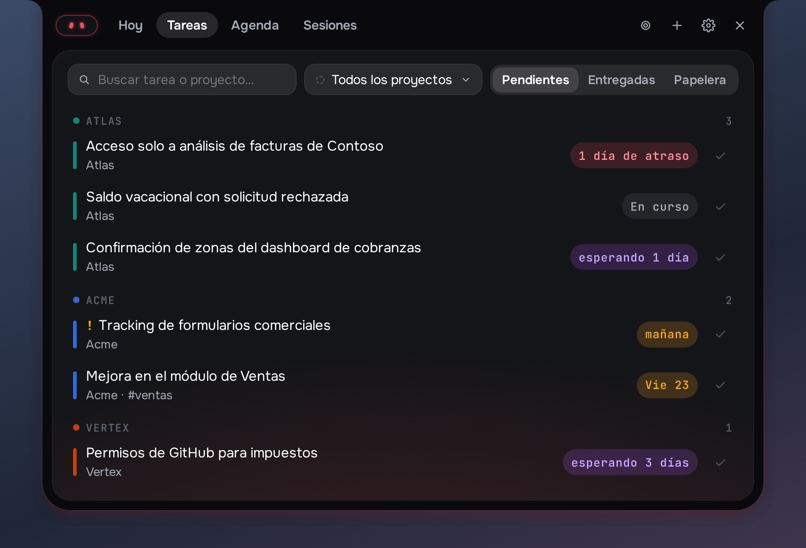
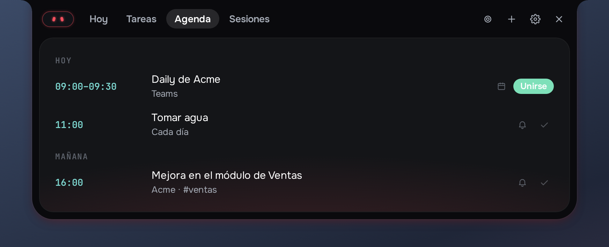
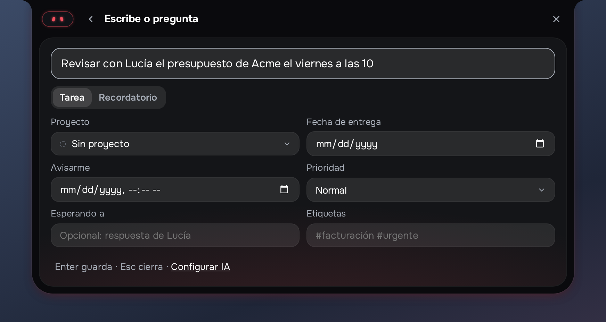

Free and open source · Windows 10 and 11
Tiki keeps your tasks, reminders, meetings and recorded sessions at the top of the screen, and tells you at the right moment what needs you. Nothing slips, and your data stays on your computer.
Alerts that stand out
Reminders, follow-ups and meetings open the notch with Tiki's face in their color, so you see them without hunting for a pop-up.
Capture
Write a task or a reminder the way you would say it. Pick the project, date and priority, or let your own AI key fill them in.
Today, tasks and agenda
Today tells you what to do now. Tasks groups your work by project, with search, delivered history and a trash you can restore from. The Agenda brings your Google and Microsoft 365 meetings, read-only.
And more
Record audio, or audio and video of a screen or window. Whisper transcribes it on your computer, with AI notes and proposed tasks.
Its face tells your day at a glance: calm, something due, something late, a meeting about to start.
With nothing pending, the notch shows CPU, memory, temperature and network.




Privacy
Tiki runs on your computer and keeps everything in a local database. There is no Tiki server that receives your data. If you connect a Google or Microsoft 365 account, Tiki only reads your calendar events (title, time, place and video-call link) to show them in the Agenda and remind you before each meeting; it never creates, changes or deletes events. Read the privacy policy.
En español
Tiki mantiene tus tareas, recordatorios, reuniones y sesiones grabadas arriba de la pantalla y te avisa en el momento justo qué necesita de ti. Captura una tarea con una frase, te avisa antes de cada reunión con botón para unirte, y se queda callado de noche y en llamadas. Si conectas Google o Microsoft 365, Tiki solo lee tus eventos y los datos se quedan en tu computadora. Más detalles en la política de privacidad.